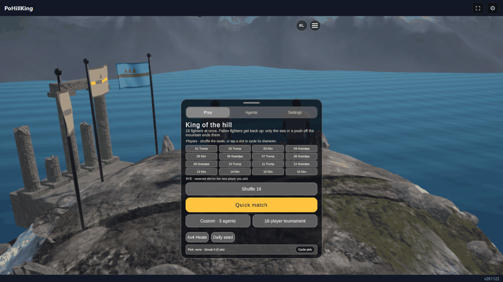
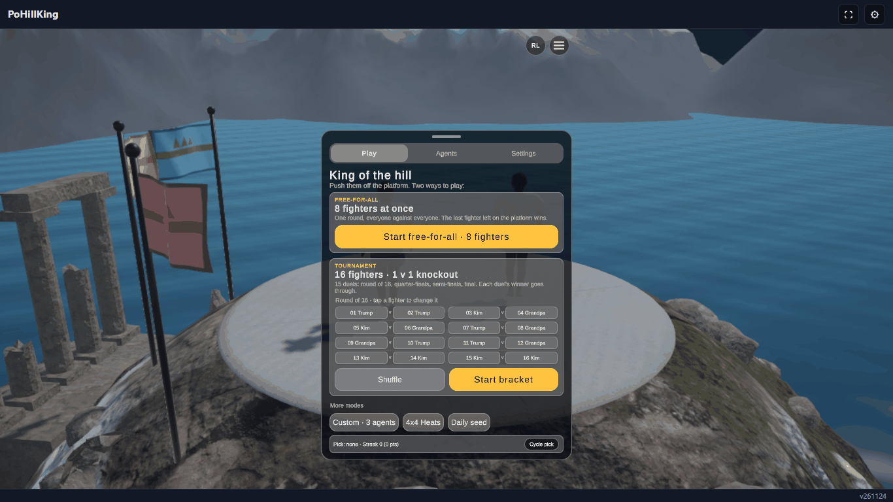
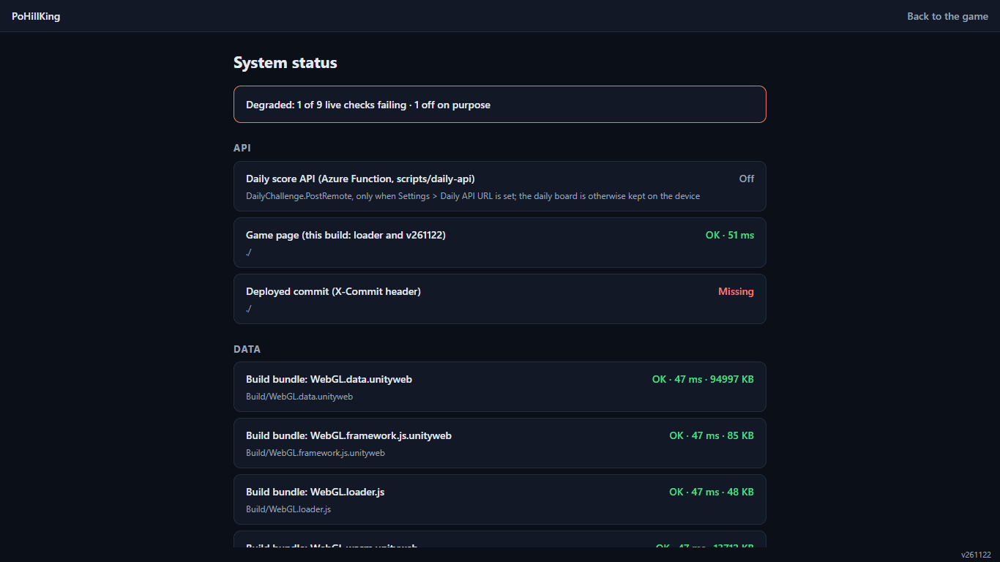
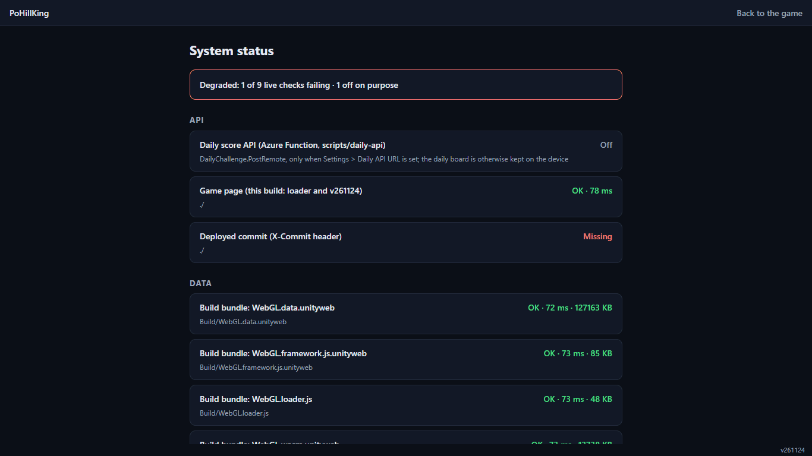
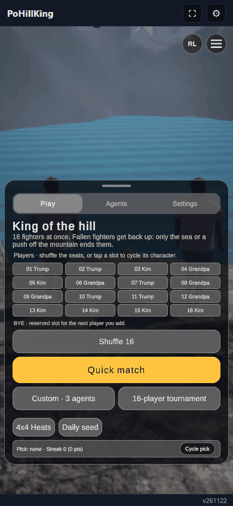
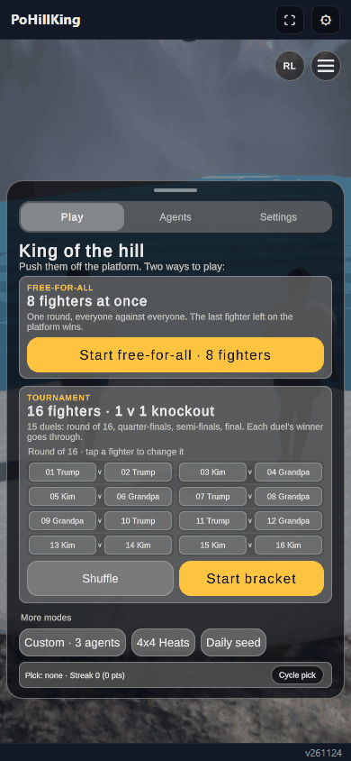
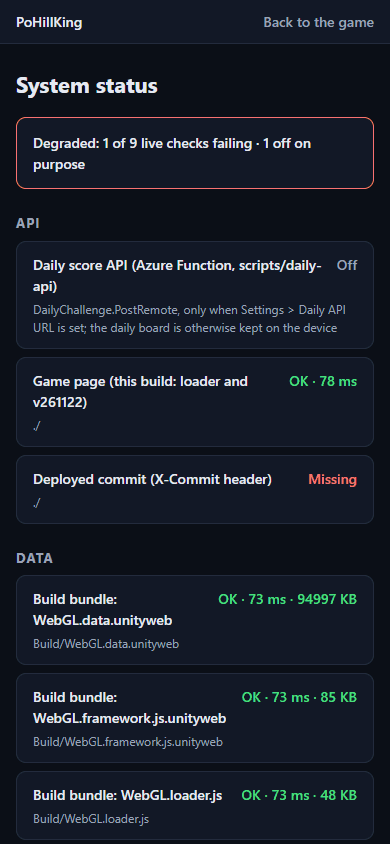
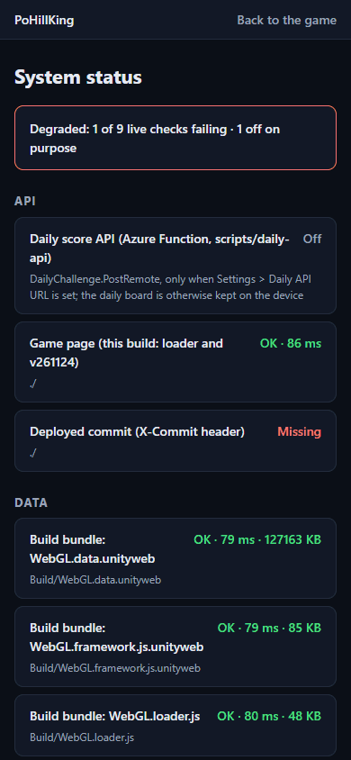

po-standard-audit

game · 1366px
Same look: the title is now an <h1> and the game sits in <main> (screen readers); pinch zoom is allowed. Before = release webgl-261122 (c08c408), so the menu also shows the owner's later menu cards.


diag · 1366px
New line under the checks: results are kept 60 s per tab and build, with a Re-check now link (?fresh).


game · 390px
Same look: the title is now an <h1> and the game sits in <main> (screen readers); pinch zoom is allowed. Before = release webgl-261122 (c08c408), so the menu also shows the owner's later menu cards.


diag · 390px
New line under the checks: results are kept 60 s per tab and build, with a Re-check now link (?fresh).

